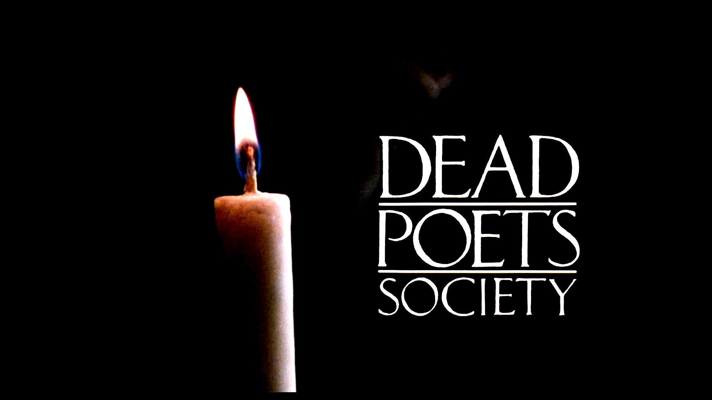
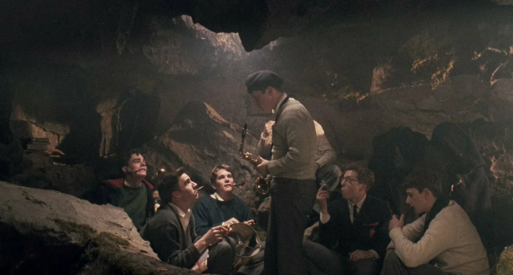

«Общество мёртвых поэтов» (англ. Dead Poets Society) — художественный фильм, снятый режиссёром Питером Уиром в 1989 году.
Премия «Оскар» за лучший оригинальный сценарий, также фильм номинировался в категориях «Лучший фильм» и «Лучшая мужская роль» (Робин Уильямс). Две премии BAFTA за лучший фильм года и лучшую музыку
Фильм повествует об истории учителя английского языка и литературы, который вдохновляет своих учеников менять свою жизнь через пробуждение в них интереса к поэзии и литературе. Действие фильма происходит в конце 1950-х в вымышленной академии города Велтон в штате Вермонт. Образ учителя Китинга, роль которого в фильме исполнил Робин Уильямс, списан с реального учителя, Сэма Пикеринга[en], преподававшего в Montgomery Bell Academy (англ.)рус., где проходил в своё время обучение сценарист фильма Том Шульман[3].
В первый же день ученики встречаются с новым учителем, Джона Китинга (Робин Уильямс), с методами преподавания, которые являются традиционными методами, применяемыми в этой школе уже на протяжении многих десятилетий. Новый учитель начинает преподавание с пламенной лекции об их (учеников) неотвратимой смерти, объясняющей, что жизнь мимолетна, поэтому они должны следовать принципу «Carpe diem» (лат. «Лови день», то есть пользуйся сегодняшним днем, лови мгновение — поэтический призыв римского поэта Горация), а себя он просит «О, капитан, мой капитан!». Остальная часть фильма — пробуждение, в котором героям фильма и зрителям даёт понять, что люди, обладающие авторитетом, должны всегда действовать как «проводники». Юноши в тайне от всех возвращающихся в жизнь литературного клуба «Общество мёртвых поэтов», членом которого в своё время являлся и сам Китинг.
Вольнодумство доставляет неприятности Нилу Пэрри. Он решает продолжать занятия искусством (то, что он любит и в чем он преуспевает) вместо занятий медициной (карьерой, которую избрал для него отец). Нил получает роль Пэка в спектакле «Сын в летнюю ночь». Отец (Кертвуд Смит) узнает об этом только накануне премьеры и показывает сыну, что он покинул театр. Нил говорит отцу, что уйдёт. Он обращается к совету Китинга, и тот говорит ему попробовать убедить отца, что актерское мастерство для него действительно важно. Нил так и не решился на этот разговор, но на следующий день говорит Китингу, что разрешил ему играть в пьесе. Выпуск проходит успешно, но отец Нила не может простить непослушание своего сына и, следовательно, отправляет его в военную школу города Браден, где бы тот прошел подготовку для поступления в Гарвард. Нил не находился в состоянии со своими чувствами и не мог взять свою отцу, поэтому он совершает самоубийство.
Начинается расследование произошедших трагедий. Директор получает всю информацию, в том числе об «Обществе мёртвых поэтов», от одного из членов Ричарда Камерона. Когда Чарли Далтон узнает о предательстве бывшего друга, он с яростью набрасывается на него, что приводит к его исключению из Велтона. Отец Нила не признает ответственности за трагическую смерть своего сына. Вместо этого он обвиняет произошедшего с учителем — Джона Китинга. Учеников за заслуги подпишет обвинение в том, что Китинг влиятельным ученикам Министерства иностранных дел «Общества мёртвых поэтов» и заставит Нилу не слушать отца. Китинга увольняют и принуждают покинуть Велтонскую школу.
Когда на очередном уроке Китинг заходит в класс за личными вещами, Тодд встает на парту и произносит: «О, капитан, мой капитан!». То же самое делают многие в классе. Тронутый поддержка со стороны поддерживающих сторон, Китинг благодарит их и уходит.
Перейти в онлайн кинотеатр